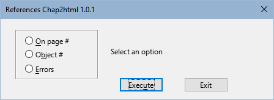
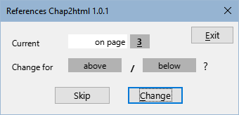

|
English |
Macros to prepare LibreOffice online guides.
This document is copyright © 2024 by the LibreOffice Documentation Team. Contributors are listed below. It may be distributed and modified under the terms of the GNU General Public License version 3 or later or the Creative Commons Attribution License,version 4.0 or later.
All trademarks mentioned in this guide belong to their rightful owners.
|
Author |
Contributors |
|
B.Antonio Fernández |
Olivier Hallot |
Sources
The macros that make up the extension described here are the result of consulting different sources which I name in general terms since it is impossible for me to go into detail. These are:
The documentation of the Basic language of the different StarOffice derivatives.
The books: Aprendiendo OooBasic by Mauricio Baeza, OpenOffice.org Macros Explained by Andrew Pitonyak and Programmation OpenOffice.org by Bernard Marcelly.
Consultations to the OpenOffice and LibreOffice forums and the study of other macros in the extensions for LibreOffice.
Chap2Html is a macro library for Writer that is intended to help you prepare LibreOffice guide chapters for export to HTML and Online viewing.
The macros adapt some formats of the ODT documents in a single pass for export to HTML, avoiding the costly work of adapting them manually.
Important
You must have two copies of chapter files with the same name: the original for the source file, intended for pdf or printed format, and one copy for preparation and export to html.
Since they have the same name, they must be stored in different directories.
Make sure you are working on the copy intended for the html export before using the macros as not all changes made are reversible.
Macros are packaged as an extension and are installed like any other extension, from the extension manager. If you encounter problems updating or installing a new version, uninstall the old version and install the new version.
They are written in LO Basic so they should be compatible for any operating system with the only dependency on the xhtml filters included in the extension Writer2xhtml which can be downloaded at LibreOffice extensions official page.
Add a toolbar (Figure 1), as well as a menu named LO Chap2html. Tools also appear integrated into the user interface In tabs.
Most tools do not have initial dialogs, but after execution a message will be displayed with information about the changes.
They are available in Spanish, English and Portuguese, with the possibility of adding other languages by adding translations to the L10n module.
Figure 1: Chap2html toolbar

The font color of the headings in the html guides is different depending on the LibreOffice component that the guide deals with; to do this, the styles of the document headings must be changed. With this macro you avoid manual changes in each chapter with possible errors when selecting colors or the use of separate templates for each guide.
The macro automatically changes the font color of the headings based on the letters at the beginning of the file name and the color assigned to each component.
In the text of the notices there may be paragraph breaks and although Writer uses a single line at the end of the text, in html each paragraph appears with one line.
The macro changes paragraph breaks to line breaks in each paragraph of the notice text to achieve the same appearance as PDF or printed guides.
This tool opens a dialog (Figure 2) that allows you to choose between three types of references and run the corresponding macro to locate and/or change them.
Figure 2: References dialog box

On page #
A new dialog opens (Figure 3) to cycle through simple page references like “on page #” and change them up or down (depending on the situation of the heading), removing the text on page.
Figure 3: on page # dialog box

Object #
The macro changes the reference to single number by the reference to Category and number (Ex. Figure 1) removing the name of the object from the text that does not belong to the field.
Errors
The macro checks these fields with errors and displays a message with the pages where they are located.
The macro adds the six additional sections needed for the html format.
Note
- The Writer2html extension filters are used because it creates an html5 file and the resulting code is cleaner than the native LibreOffice export.
Important
Make sure you are using Writer2xhtml version 1.7 “Final” or higher. With version 1.7 beta, the ordered list format is not exported correctly.
Figure 4: Info diálogo box

If you have read this far, you will have seen many vocabulary and grammatical errors.
This document is translated from Spanish with Google (some corrections made by me).
I'm sorry my English is so bad but I hope this document was understandable.